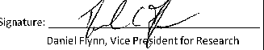

Division of Research University Policy
SUBJECT: | Effective Date: | Policy Number: |
Subaward and Monitoring Policy· | 2/21//2017 | 10.5.16 |
Supersedes: | Page 1 Of 6 | |
11/21/13, 01/25/13, 02/18/11,9/16/09 | ||
Responsible Authorities: | ||
Vice President for Research | ||
Director, Research Accounting | ||
Director, Sponsored Programs | ||
Background
Florida Atlantic University is required by 2 CFR Part 200- Uniform Administrative Requirements, Cost Principles, and Audit Requirements for Federal Awards (Uniform Guidance) to issue, evaluate and monitor subawards and the activities of subrecipients to ensure compliance with applicable Federal regulations.
Purpose
The purpose of the policy is to establish subaward and monitoring procedures for both Federal and Non-Federal awards in order to provide guidance and to ensure compliance with university policies, state regulations and Uniform Guidance that include:
2 CFR Part 200.205 Federal awarding agency review of risk posed by applicants
2 CFR Part 200.207 Specific Conditions
2 CFR Part 200.331 Requirements for pass-through entities
2 CFR Part 200.338 Remedies for Non-Compliance
2 CFR Part 200.501 Audit requirements
2 CFR Part 200.521 Management decision
Ill. General Statement
Research Accounting and Sponsored Programs is available to answer questions and provide assistance regarding the requirements of the Subaward and Monitoring Policy.
Policy
Determining a Subrecipient:
The Principal Investigator (Pl) is the expert in determining whether a subrecipient is necessary for the performance of a project. Subawarded work is generally conducted at another institution or company and usually has a budget for salary/fringe benefits, supplies, etc. The sponsor requirements/terms and conditions are passed down to the subrecipient via written agreements and compliance must be monitored budget for salary/fringe benefits, supplies, etc. The sponsor requirements/terms and conditions are passed down to
the subrecipient via written agreements and compliance must be monitored. Determining if the service provided is from a consultant, vendor or subrecipient:
Category | Consultant | Vendor | Subrecipient |
Type of work | A company or an individual that provides advice, expertise, consulting, training or related professional services for specified matters (work for hire) | Performs services or provides goods (no discretionary judgment) such as lab testing that is a part of regular business operations and are available to many different purchasers or customers | Completes programmatic work within the research objectives of the prime award; retains programmatic control and discretion over how the work is carried out and makes independent decisions regarding how to implement the requested activities. Is responsible for compliance with Federal program requirements. Publications may be created or co- authored. |
F&A (Indirect Costs) | F&A costs apply to entire amount | F&A costs apply to entire amount | F&A costs apply only to the first $25,000 of each subaward on federal awards |
Principal Investigator | Person conducting the work is identified, but has no programmatic decision making | Person conducting the work is not necessarily identified | Investigator is identified and is responsible for programmatic decision making |
Compliance | N/A | N/A | Responsible for adhering to applicable program compliance requirements i.e., federal regulations, agency regulations, etc. |
Technology Transfer | Title to all inventions and discoveries made by Consultant resulting from the work performed resides with FAU | No potential for patentable or copyrightable technology to be created | Potential for patentable or copyrightable technology to be created through the project; entity has the right to protect technology |
Publications | N/A | N/A | Publication of results are expected; investigator to author or co-author |
Cost Sharing | N/A | N/A | May be providing cost sharing or matching funds |
Agreement Type | Fixed (Daily or hourly rate) | Fixed | Cost Reimbursable (typically) |
Restrictions | *FAU employees "cannot" be a consultant. *Federal funds "cannot" be used to pay for federal consultants. | N/A | Refer to sponsor terms and conditions of the award document, agreement, contract, etc. |
Documents | N/A | N/A | Proposal Stage (LOI, Scope of Work, Detailed Budget, F&A rate agreement (if federal}) Awarded Stage (Subaward Application, Pl Verification, Risk Assessment) |
Subrecipient Eligibility and Approval:
All funded subrecipients are required to complete a Subaward Application Form regardless of the funding type. The Subaward Application Form includes the proposal, contact information, financial profile including audit report or financial statements, F&A rate agreement (if federally funded}, Scope of Work (SOW}, and detailed budget.
To reduce the administrative burden on entities, if a subrecipient has already submitted their financial profile information and audit report within the last 12 months, this information is not required. Additionally, institutions who have completed the on-line entity profiles through the FOP Expanded Clearinghouse are not required to submit their financial profile information. The subrecipient is only required to submit the proposal, contact information, Scope of Work and detailed budget for these cases.
The Pl reviews the Subaward Application and verifies that the documents submitted meet the project requirements and the budget submitted is allowable, allocable, reasonable and appropriate for the work to be performed. The Pl completes the Subaward Verification form and submits to Sponsored Programs.
Upon receiving both the Subaward Application Form and Subaward Verification Form, Sponsored Programs will determine:
If the organization is excluded from receiving federal funds by reviewing the System for Award Management (SAM). If the subrecipient has active exclusions or is delinquent on federal debt. If they are excluded or have active exclusions or delinquent on federal debt, they are not permitted to receive federal funds.
If the organization is sanctioned by reviewing the Office of Foreign Assets Control (OFAC} Sanctions List. If organization is listed, they are not permitted to receive federal funds.
Sponsored Programs will evaluate the subrecipient's level of risk and assess a risk level of low, medium or high.
Low-the subrecipient is another educational institution that consistently has good audit reports with no potential audit findings
Medium -the subrecipient has previous audit findings or failed to submit timely programmatic reports
High - lack of documented internal controls, no previous experience with subrecipient, foreign institution, no audited financial reports, financial reports submitted are not in English (foreign language}, subaward is more than 75% of the prime award. (Note: A high risk requires additional approval from General Counsel}
Sponsored Programs will inform the Pl if approval is denied or if the risk level assessed is high.
Sponsored Programs will review the Subaward Application questions regarding research subjects, EH&S safeguards, export controls and conflict of interest and obtain appropriate approvals, if needed.·
Sponsored Programs will negotiate and draft the subaward agreement with the subrecipient using FAU's applicable subaward template.
Once executed, Sponsored Programs will forward copies of all subaward documents including the executed subaward to the Pl, department administrator and Research Accounting. Research Accounting will initiate a Supplier Contract (Requisition).
Monitoring Subawards (Federal and Federal Flow-Through Only):
The Principal Investigator is responsible for the following monitoring areas:
Establish and maintain channels of communication with the subrecipient.
Perform on-site visits, if applicable. These visits could be conducted to evaluate compliance with the scientific objective of the project.
Review and approve invoices to ensure that expenses are:
Submitted in a timely manner
Allocable and reasonable (refer to the Criteria for the Allowability of Costs on Federal Awards)
Incurred within the period of performance
Aligned with technical progress
Cost-sharing is appropriately reflected, if applicable
Review financial and programmatic reports to ensure that performance goals are achieved; and identify any problems in carrying out the project. In some cases, subaward terms may require specified deliverables in addition to or in lieu of technical reports.
Follow up and ensure that the subrecipient takes timely and appropriate action on all deficiencies detected through on-site reviews, if applicable.
The Pl is required to complete an Annual Subaward Verification Form issued by Research Accounting; typically, 12 months after the start date.
If changes are requested by the subrecipient regarding project end dates, budget amount, or Scope of Work, contact the Office of Sponsored Programs for guidance on whether an amendment should be issued.
Upon the end date of the subaward agreement, the Pl must complete a Closeout Subrecipient Verification Form, to document the Pis confirmation that all requirements were met by the subrecipient; typically, 90 days after the end date.
Research Accounting will be responsible for the following monitoring areas:
Review and maintain audit documentation for monitoring efforts on the following types of entities:
Non-Profit:
Obtain annual audit reports, if applicable.
Review annual audit reports and document findings, if any, using a subaward monitoring form.
Any material finding related to the project will be referred to General Counsel and Sponsored Programs.
Research Accounting will determine whether the subrecipient carrying out the project may need to be monitored more rigorously.
Research Accounting will notify the Principal Investigator and Sponsored Programs if additional monitoring will be required.
For-Profit:
Obtain annually audited financial statements, if applicable. Note: For-Profit entities are not required to disclose financial statements.
Review financial statements and refer any concerns to General Counsel and Sponsored Programs.
Research Accounting will determine whether the subrecipient carrying out the project may need to be monitored more rigorously.
If the subaward amount is in excess of $500,000, a discretionary audit may be performed sometime during the life of the subaward agreement. Although these audits are generally infrequent, they are considered an acceptable monitoring practice under federal regulations; the University's subawards contain a "right-to-audit" clause.
Audit documents requested could include, but are not limited to: payroll certifications or timecards, copies of expenditure receipts and/or invoices as well as travel charges and cost share documentation, if applicable.
Foreign:
Foreign subawards are associated with increased risk, which may require a greater degree of review, evaluation and attention therefore; pre-award or discretionary audits may be required.
Research Accounting will assist the Pl in monitoring the activities of the subrecipient which include:
Issue and maintain the Subrecipient Verification Forms for the Annual review and closeout.
Review financial reports required by the pass-through entity.
Follow-up and ensure subrecipients take timely and appropriate action on all deficiencies detected through audits.
Issue a management decision for audit findings, if applicable.
Discretionary audits of subawards are considered acceptable monitoring practices under federal regulations; the University's subaward agreements contain a "right to-audit" clause. Audits could be performed, but are generally infrequent.
Non-compliance of subrecipients:
Failure of a subrecipient to provide requested documentation or to address any concerns 'may' require FAU to take the following action:
Temporarily suspend or withhold cash payments pending correction of the deficiency by the subrecipient.
Disallow all or part of the cost of the activity or action not in compliance.
Wholly or partly suspend or terminate the subaward.
Initiate suspension or debarment proceedings
Withhold further Federal awards for the project or program.
Take other remedies that may be legally available.
Definitions
Pass-Through Entity (PTE) means a non-federal entity that provides a subaward to a subrecipient to carry out part of a federal program. The pass-through entity assumes responsibility for negotiation, issuance, oversight, and management of a subaward.
Subaward means an award provided by a pass-through entity to a subrecipient for the subrecipient to carry out part of a Federal award received by the pass-through entity.
Subrecipient means a non-Federal entity that receives a subaward from a pass-through entity to carry out part of a Federal program; but does not include an individual that is a beneficiary of such program. A subrecipient may also be a recipient of other Federal awards directly from a Federal awarding agency.
Accountability
The Principal Investigator, Grant Manager, Research Accounting and Sponsored Programs are responsible for issuing subawards and subrecipient monitoring. Refer to the Subaward and Monitoring Guidance Grid fora summarized listing of subaward and monitoring responsibilities.
Annual Review of Procedures Manual
The Subaward and Monitoring Policy will be reviewed as necessary.
POLICY APPROVAL

Initiating Authority
Date: , U1s/n-